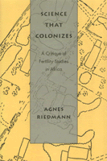

<body bgcolor="#FFFFFF" text="#000000" link="#0000FF" vlink="#CC0000" alink="#CC0000"><center><hr width="350" size="1" align="center" noshade>A study charges Western researchers with First World cultural imperialism<hr width="350" size="1" align="center" noshade><p><a href="https://cdcshoppingcart.uchicago.edu/Cart/ChicagoBook.aspx?ISBN=9781566390422&&PRESS=temple" target="_top">Buy this book!</a> | <a href="https://cdcshoppingcart.uchicago.edu/Cart/Cart.aspx?PRESS=temple" target="_top">View Cart</a> | <a href="https://cdcshoppingcart.uchicago.edu/Cart/Cart.aspx?PRESS=temple" target="_top">Check Out</a></p><p></p></center><!--none//--><h1>Science that Colonizes</h1>
<H2>A Critique of Fertility Studies in Africa</H2>
<h3>Agnes Riedmann</h3>
<P>cloth 1-56639-042-7 $49.95, Jun 93, <FONT COLOR=#990033>Out of Stock Unavailable</FONT>
<BR> 192 pp
6x9
5&nbsp;tables 3&nbsp;figures
</P><BLOCKQUOTE><I>"This is an excellent book. It is timely for the field of demography, where the current mood indicates a willingness to reevaluate accepted empirical practices and to rethink standard theoretical positions. This book should contribute importantly to that reevaluation and rethinking, especially so as it is written in a clear and accessible style."</I>
<br>&#151<b>Susan Watkins</b>, Center for Advanced Studies in Behavioral Sciences<I></I></BLOCKQUOTE>
<p>Agnes Riedmann argues that the authority of First World scientists to penetrate the Third World for research has its roots in the 15th century idea of a "right to invade." Introducing "World System Demography," a global, bureaucratically administered science that is controlled by the First World elite, she analyzes three large-scale research projects that were carried out among the Yoruba in Nigeria in the early 1970s. She maintains that World System Demography, exemplified by such studies, is an agent of First World-directed cultural imperialism.
<p>Charging that World System Demography is an extension of the Western family planning/birth control movement, Riedmann critically analyzes how even the collection of data ultimately promotes contraception. Using the reports of interviewers, she illustrates how Western assumptions conflict with those of the research population, and she discusses policy considerations.
<BR>&nbsp;<h2>Reviews</h2>
<p>Read a <a href="../authors/949_review.pdf">review</a> from <I>Canadian Journal of African Studies</I>, Volume 32.1 (1998), written by Karol J. Krotki (pdf).
<BR>&nbsp;<h2>Contents</h2><P>
<p>Maps and Tables
<br>Acknowledgments
<p>1. Introduction: World-System Demography and the Yoruba
<br><I>Bureaucratic Surveillance &#149
The CAFN Projects &#149
From World-System Theory to World-System Demography &#149
Nigerian Demographic Data &#149
The Yoruba &#149
What Follows</I>
<p>2. Historical Prelude: Bringing Yorubaland into the World System
<br><I>Eurocentric Devaluation of the Yoruba &#149
Deconstruction of the Indigenous Economy &#149
Advancing Bureaucratic Surveillance &#149
Resistance and Political Liberation &#149
Nigeria Today &#149
Demographic Parallels with the Historical Themes &#149
Conclusion</I>
<p>3. The Yoruba Fieldworkers: Emissaries of Bureaucratic Surveillance
<br><I>The Subordinates as Yorubas &#149
The Bureaucratic Supervision Network &#149
Ongoing Training &#149
Conclusion</I>
<p>4. Gaining Entrance
<br><I>"Block 40" and Surveillance &#149
Utilizing Cultural Capital from Two Worlds &#149
Sources of Difficulty &#149
Invading Subjects' Territorial Selves &#149
Conclusion</I>
<p>5. The Lessons Inherent in the CAFN Projects
<br><I>Disciplining Power and Docile Bodies &#149
Lesson 1: The "Real" Family Is the Nuclear Family &#149
Lesson 2: Children Should be Evaluated According to a Cost Calculus &#149
Lesson 3: Western Contraceptive Methods are Morally Acceptable as Traditional Measures &#149
Lesson 4: Personal Efficacy is Normal and Natural &#149
Lesson 5: Placing Oneself under Bureaucratic Surveillance is Normal and Natural &#149
Conclusion</I>
<p>6. Resisting the Lessons
<br><I>"I strongly suspect that she lied" &#149
"This attitude is foreign to African society" &#149
"The poor man must not lack both wealth and children" &#149
"She is not interested in such topics" &#149
"Things should be allowed to happen as it pleases God" &#149
Restating the Yoruba Case &#149
The Effect of Western Schooling on Compliance &#149
Conclusion</I>
<p>7. The CAFN Projects as Exercises in World-System Demography: Policy Considerations
<br><I>Exploitation and Reactivity &#149
World-System Demography and Funding Agencies &#149
Opening Doors &#149
Conclusion</I>
<p>Appendix A: The Study Design
<br>Appendix B: Description of Background Documents, with Samples
<br>Notes
<br>Bibliography
<br>Index
</P><BR>&nbsp;<H2>About the Author(s)</H2>
<P><b>Agnes Riedmann</b> has taught sociology and anthropology at the University of Nebraska and Creighton University.</P>
<BR><H2>Subject Categories</H2>
<p><A HREF="/tempress/anthropology.html" TARGET="_top">Anthropology</a>
</p>
<BR><h2 class="inpageheading">In the series</H2>
<P><I><a href="http://www.temple.edu/tempress/health_society.html" onMouseOver="window.status='Click for other books in this series!'; return true;" onMouseOut="window.status=''; return true;" target="_top">Health, Society, and Policy</a></i>, edited by Sheryl Ruzek and Irving Kenneth Zola.
</p><p>No longer active.<p><i>Health, Society and Policy</i>, edited by Sheryl Ruzek and Irving Kenneth Zola, takes a critical stance with regard to health policy and medical practice, ranging broadly in subject matter. Backlist titles include books on the legal and professional status of midwifery, the experience and regulation of kidney transplants, the evolution of federal law on architectural access, and a political/ethical argument for making the community responsible for universal access to health care.</p>
<p align="center"><a href="https://cdcshoppingcart.uchicago.edu/Cart/ChicagoBook.aspx?ISBN=9781566390422&&PRESS=temple" target="_top">Buy this book!</a> | <a href="https://cdcshoppingcart.uchicago.edu/Cart/Cart.aspx?PRESS=temple" target="_top">View Cart</a> | <a href="https://cdcshoppingcart.uchicago.edu/Cart/Cart.aspx?PRESS=temple" target="_top">Check Out</a></p><p><font face="Arial" size="1"><a href="copyright.html" onMouseOver="window.status='Web Copyright Policy';return true;" onMouseOut="window.status=''" title="Web Copyright Policy">&copy;</a> 2015 <a href="http://www.temple.edu" target="new" onMouseOver="window.status='Link to Temple University home page';return true;" onMouseOut="window.status=''" title="Link to Temple University home page">Temple University</a>. All Rights Reserved. http://www.temple.edu/tempress/titles/949_reg.html</font></p>